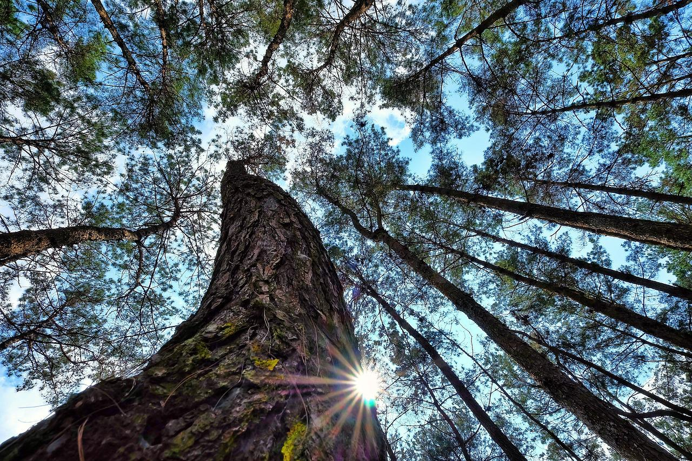
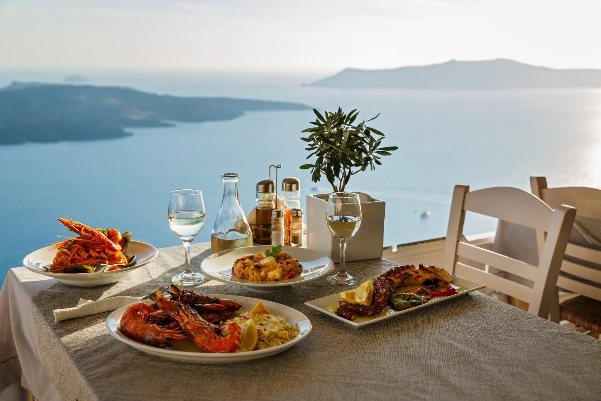

A la decouverte de la nature

La Nature s’offre à ceux qui prennent le temps de la regarder.
Le week-end, le mercredi ou en vacances : marcher dans la nature, apprendre à écouter les
bruits
de la forêt, observer et prendre du plaisir à découvrir ce qui se cache sous nos yeux malgré
nos
emplois du temps trop remplis… Voilà une source d'émerveillement et de plaisir !
Depasser ses peurs
Le dépassement de soi, voilà un sujet qui revient souvent sur le devant de la scène ! Un
concept
de la vie étroitement lié au sport et qui parfois en surprend plus d’un !
En effet, le sport va bien au-delà de la pratique d’une simple activité physique, car il
intègre
également le mental. Raison pour laquelle ses bienfaits sur l’esprit sont unanimement
reconnus.
Et comme il s’agit d’une notion importante pour moi, j’ai eu envie de vous en parler dans un
article 😉.
Espace detente
On a toujours le choix. On est même la somme de ses choix.
Laissez-vous guider par votre rêve, même si vous devez momentanément le mettre de côté pour
trouver un emploi ou payer votre loyer. Et restez toujours ouvert aux opportunités de sortir du
cadre pour mener la vie et faire les choses qui vous inspirent profondément… n’ayez pas peur.
Faites le bien, par petits bouts, là où vous êtes ; car ce sont tous ces petits bouts de
bien, une fois assemblés, qui transforment le monde.
Voyager à travers la gastronomie
Eveiller ses papilles

Cher gastronome, je profite de cette carte pour te passer un bonjour, et t'offrir quelques
citations :
- La gastronomie fait trembler d'intelligence nos narines.
(Charles Monselet)
- Les seules ententes internationales possibles sont des ententes gastronomiques.
(Léon Daudet)
- La gastronomie est l'art d'utiliser la nourriture pour créer le bonheur.
(Theodore Zeldin)
Je te souhaite plein de bonheur, et de bon repas !
(Sans abus ...)